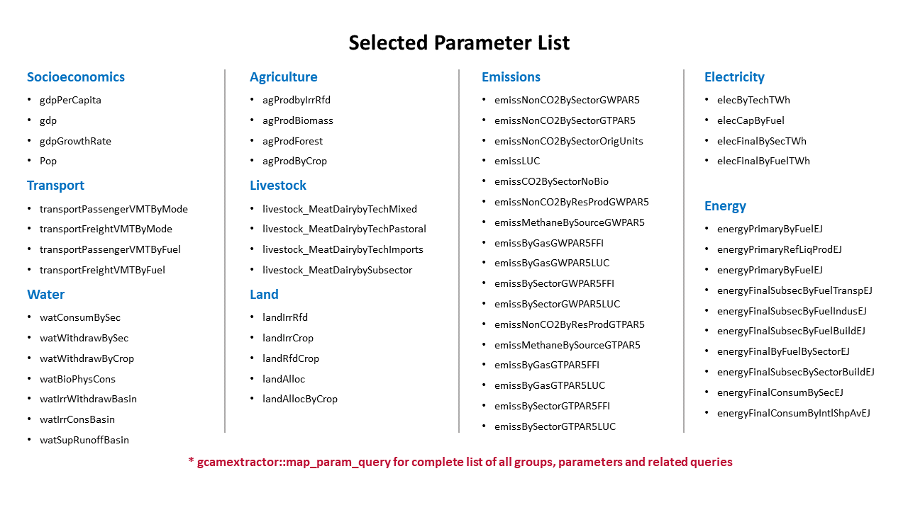

Read GCAM database

gcamextractor::readgcam will return a list containing:
- data: a dataframe with the original data
- dataAggParam: a dataframe with the data aggregated to the parameter
- dataAggClass1: a dataframe with the data aggregated to class 1
- dataAggclass2: a dataframe with the data aggregated to class 2
- scenarios: A list of the scenarios
- queries: A list of the queries used to extract the data
library(gcamextractor)
Path_to_GCAMdatabase <- "E:/gcam-core-gcam-v5.3" # Change the path based on your GCAM database location
dataGCAM <- gcamextractor::readgcam(gcamdatabase = Path_to_GCAMdatabase)
df <- dataGCAM$data; df
dfParam <- dataGCAM$dataAggParam; dfParam
dfClass1 <- dataGCAM$dataAggClass1; dfClass1
dfClass2 <- dataGCAM$dataAggClass1; dfClass2Read GCAM .Proj file
gcamextractor includes a default example .Proj file gcamextractor::exmapleGCAMproj.
library(gcamextractor)
dataGCAM <- gcamextractor::readgcam(gcamdatabase = gcamextractor::example_GCAMv52_2050_proj)User can provide path to .Proj file to read GCAM data.
library(gcamextractor)
Path_to_GCAMProj <- "E:/dataProj_example.proj" # Change the path to your .proj file
dataGCAM <- gcamextractor::readgcam(gcamdatabase = Path_to_GCAMProj)
Available Paramaters

Socioeconomics
Table 1: Summary of parameters for socioeconomics.
| Parameter | Description and Unit | Original GCAM Unit | Source Queries |
|---|---|---|---|
| gdpPerCapita | GDP per Capita (Thousand 1990 USD per Person) | Thousand 1990 USD per Person | GDP per capita MER by region |
| gdp | GDP (Billion 1990 USD) | Million 1990 USD | GDP MER by region |
| gdpGrowthRate | GDP Growth Rate (Percent) | Million 1990 USD | GDP MER by region |
| pop | Population (Millions) | Thousands | Population by region |
Transport
Table 2: Summary of parameters for transport.
| Parameter | Description and Unit* | Original GCAM Unit | Source Queries |
|---|---|---|---|
| transportPassengerVMTByMode | Passenger VMT (services) by Mode (million pass-km) | million pass-km | transport service output by mode |
| transportFreightVMTByMode | Freight VMT (services) by Mode (million ton-km) | million ton-km | transport service output by mode |
| transportPassengerVMTByFuel | Passenger VMT (services) by Fuel (million pass-km) | million pass-km | transport service output by tech (new) |
| transportFreightVMTByFuel | Freight VMT (services) by Fuel (million ton-km) | million ton-km | transport service output by tech (new) |
*Passenger VMT modes: 2W and 3W, bus, car, large car and truck, LDV, plane, and rail.
*Freight VMT modes: heavy truck, light truck, medium truck, rail, and ship.
*Passenger VMT fuel: biofuel, electricity, fossil fuel, gas, hydrogen, and LA-electricity.
*Freight VMT fuel: biofuel, coal, electricity, fossil fuel, gas.
Water
Table 3: Summary of parameters for water.
| Parameter | Description and Unit* | Original GCAM Unit | Source Queries |
|---|---|---|---|
| watConsumBySec | Water Consumption by Sector (km3) | km3 | water consumption by state, sector, basin (includes desal) |
| watWithdrawBySec | Water Withdrawal by Sector (km3) | km3 | water withdrawals by state, sector, basin (includes desal) |
| watWithdrawByCrop | Water Withdrawals by Crop (km3) | km3 | water withdrawals by crop |
| watBioPhysCons | Biophysical Water Consumption (km3) | km3 | biophysical water demand by crop type and land region |
| watIrrWithdrawBasin | Irrigation Water Withdrawal (km3) | km3 | water withdrawals by water mapping source |
| watIrrConsBasin | Irrigation Water Consumption (km3) | km3 | water consumption by water mapping source |
| watSupRunoffBasin | Runoff (km3) | km3 | Basin level available runoff |
| waterWithdrawROGW | Runoff vs Groundwater (km3) | km3 | Water withdrawals by water source (runoff vs. groundwater) |
*Water consumption sectors: animal, domestic, electric, industry, irrigation, and primary.
*Water withdrawal sectors: agriculture, electricity, industry, livestock, mining, municipal, and desalination.
*Crop: biomass, corn, fibercrop, fodderherb, miscellaneous crop, oil crop, other grain, palm fruit, rice, root tuber, sugar crop, wheat, and fodder grass.
Agriculture
Table 4: Summary of parameters for agriculture.
| Parameter | Description and Unit | Original GCAM Unit | Source Queries |
|---|---|---|---|
| agProdbyIrrRfd | Agricultural Production (Mt) | Mt | ag production by tech |
| agProdBiomass | Biomass Production (EJ) | EJ | ag production by tech |
| agProdForest | Forest Production (billion m3) | billion m3 | ag production by tech |
| agProdByCrop | Crop Production (Mt) | Mt | ag production by tech |
Livestock
Table 5: Summary of parameters for livestock.
| Parameter | Description and Unit | Original GCAM Unit | Source Queries |
|---|---|---|---|
| livestock_MeatDairybyTechMixed | Livestock Production Mixed Feed (Mt) | Mt | meat and dairy production by tech |
| livestock_MeatDairybyTechPastoral | Livestock Production Pastoral (Mt) | Mt | meat and dairy production by tech |
| livestock_MeatDairybyTechImports | Livestock Production Imported Feed (Mt) | Mt | meat and dairy production by tech |
| livestock_MeatDairybySubsector | Livestock Production (Mt) | Mt | meat and dairy production by tech |
Land Use
Table 6: Summary of parameters for land use.
| Parameter | Description and Unit* | Original GCAM Unit | Source Queries |
|---|---|---|---|
| landIrrRfd | Irrigated vs Rainfed Land (1000 km2) | 1000 km2 | land allocation by crop and water source |
| landIrrCrop | Irrigated Crop Land (1000 km2) | 1000 km2 | land allocation by crop and water source |
| landRfdCrop | Rainfed Crop Land (1000 km2) | 1000 km2 | land allocation by crop and water source |
| landAlloc | Land Allocation by Aggregated Land Type (1000 km2) | 1000 km2 | aggregated land allocation |
| landAllocByCrop | Cropland Allocation (1000 km2) | 1000 km2 | land allocation by crop |
| landAllocDetail | Land Allocation by Detailed Land Type (1000 km2) | 1000 km2 | detailed land allocation |
*Aggregated land type: crops, forest, natural other, natural other grass, natural other tree, pasture, and crop
*Detailed land type: biomassGrass, biomassTree, Corn, FiberCrop, Forest, Grassland, MiscCrop, OilCrop, OtherArableLand, OtherGrain, PalmFruit, Pasture, ProtectedGrassland, ProtectedShrubland, ProtectedUnmanagedForest, ProtectedUnmanagedPasture, Rice, RootTuber, Shrubland, SugarCrop, UnmanagedForest, UnmanagedPasture, UrbanLand, Wheat, FodderGrass, FodderHerb, RockIceDesert, and Tundra
Emissions
Table 7: Summary of parameters for emissions.
| Parameter | Description and Unit | Original GCAM Unit | Source Queries |
|---|---|---|---|
| emissNonCO2BySector | GHG Emissions (non CO2) by Gas Type (Gg/Tg/MTC) | Gg/Tg/MTC | nonCO2 emissions by sector; nonCO2 emissions by sector USA; nonCO2 emissions by sector USA nonUS |
| emissNonCO2BySectorGWPAR5 | GHG Emissions GWP AR5 (MTCO2eq) | Gg/Tg/MTC | nonCO2 emissions by sector; nonCO2 emissions by sector USA |
| emissNonCO2BySectorGTPAR5 | GHG Emissions GTP AR5 (MTCO2eq) | Gg/Tg/MTC | nonCO2 emissions by sector; nonCO2 emissions by sector USA |
| emissNonCO2BySectorOrigUnits | GHG Emissions by Gas Type (Gg/Tg/MTC) | Gg/Tg/MTC | nonCO2 emissions by sector |
| emissNonCO2ByResProdGWPAR5 | Non-CO2 Emissions by Resource Production GWP AR5 (MTCO2eq) | Tg | nonCO2 emissions by resource production |
| emissNonCO2ByResProdGTPAR5 | Non-CO2 Emissions by Resource Production GTP AR5 (MTCO2eq) | Tg | nonCO2 emissions by resource production |
| emissCO2BySector | CO2 Emission (MTC) | MTC | CO2 emissions by sector |
| emissCO2BySectorNoBio | CO2 Emission without Bio (MTCO2eq) | MTC | CO2 emissions by sector (no bio) |
| emissLUC | LUC CO2 Emissions (MTCO2eq) | MTC | Land Use Change Emission (future) |
| emissBySectorGTPAR5FFI | Emissions from Fossil FUels and Industry (FFI) but LUC GTP AR5 (MTCO2eq) | MTC | nonCO2 emissions by resource production; nonCO2 emissions by sector |
| emissBySectorGTPAR5LUC | Emissions from Landuse Change (LUC) GTP AR5 (MTCO2eq) | MTC | nonCO2 emissions by resource production; nonCO2 emissions by sector |
| emissByGasGTPAR5FFI | Total Emissions without LUC GTP AR5 Summarized (MTCO2eq) | MTC | nonCO2 emissions by resource production; nonCO2 emissions by sector |
| emissByGasGTPAR5LUC | Total Emissions with LUC GTP AR5 Summarized (MTCO2eq) | MTC | nonCO2 emissions by resource production; nonCO2 emissions by sector |
| emissMethaneBySourceGWPAR5 | Methane Emissions GWP AR5 (MTCO2eq) | Tg | nonCO2 emissions by sector |
| emissMethaneBySourceGTPAR5 | Methane Emissions GTP AR5 (MTCO2eq) | Tg | nonCO2 emissions by sector |
Electricity
Table 8: Summary of parameters for electricity.
| Parameter | Description and Unit* | Original GCAM Unit | Source Queries |
|---|---|---|---|
| elecByTechTWh | Electricity Generation by Fuel (TWh) | EJ | elec gen by gen tech USA; elec gen by gen tech and cooling tech |
| elecCapByFuel | Electricity Capacity by Fuel (GW) | EJ | elec gen by gen tech USA; elec gen by gen tech and cooling tech |
| elecFinalBySecTWh | Final Electricity by Sector (TWh) | EJ | inputs by tech |
| elecFinalByFuelTWh | Final Electricity (TWh) | EJ | Final energy by detailed end-use sector and fuel |
*Fuel: biomass, coal, gas, geothermal, hydro, nuclear, refined liquids, solar, and wind.
*Final electricity sectors: building, industry, and transport.
elecByTechTWh
elecByTechTWh uses “elec gen by gen tech and cooling tech” query and converts electricity generation of GCAM raw output from EJ to TWh:
\[elecByTechTWh = elecByTechEJ_{GCAM} \times convEJ2TWh\] where convEJ2TWh is the conversion constant from EJ to TWh, 1 EJ = 277.7778 TWh. gcamextractor::readgcam also aggregates “rooftop_pv” into “solar” category in the technology subsector (shown in “class1” colomn).
library(gcamextractor)
dataGCAM <- gcamextractor::readgcam(dataProjFile = gcamextractor::example_GCAMv52_2050_proj,
paramsSelect = 'elecByTechTWh',
regionsSelect = 'USA')elecCapByFuel
elecCapByFuel calculates electricity capacity (GW) based on the output from elecByTechTWh:
\[elecCapByFuel = \frac{elecByTechTWh \times 1000}{8760 \times gcamCapacityFactor}\]
gcamCapacityFactor is calculated as an average of the capacity factors of the technologies within each subsector (See Table 3) based on the data from:
- Global technology capacity factor from “GCAM-FOLDER\input\gcamdata\inst\extdata\energy\A23.globaltech_capacity_factor.csv”
- USA renewable technology capacity factors by States from “GCAM-FOLDER\input\gcamdata\inst\extdata\gcam-usa\NREL_us_re_capacity_factors.csv”
- Hydrogen fuel cell capacity factor from https://www.eia.gov/todayinenergy/detail.php?id=35872 and https://www.nrel.gov/analysis/tech-cap-factor.html
Exceptions in calculating gcamCapacityFactor include:
- For “solar” capacity factor the CSP_storage capacity factor value of 0.65 was excluded from the average.
- The “hydro” capacity factor was sourced from Global CCS Institute “Renewable power generation costs in 2012: an overview” - 5.2 Capacity factors for hydropower, since hydropower is calculated endogenously within GCAM.
- No cogeneration capacity factor “n CHP” was given.
- rooftop_pv was assumed the same as solar average (5) grid_storage assumed to have a high cap factor equal to that of nuclear
Table 3: Averaged capacity factor for electricity generation by generation technology.
| Subsector (class1) | Average capacity factor from 1971 to 2100 |
|---|---|
| coal | 0.8125 |
| gas | 0.816667 |
| oil | 0.816667 |
| biomass | 0.825 |
| nuclear | 0.9 |
| geothermal | 0.9 |
| hydro | 0.5 |
| wind | 0.37 |
| solar | 0.216667 |
| rooftop_pv | 0.216667 |
| hydrogen | 0.8 |
| grid_storage | 0.9 |
library(gcamextractor)
dataGCAM <- gcamextractor::readgcam(dataProjFile = gcamextractor::example_GCAMv52_2050_proj,
paramsSelect = 'elecCapByFuel',
regionsSelect = 'USA')Energy
Table 9: Summary of parameters for energy.
| Parameter | Description and Unit* | Original GCAM Unit | Source Queries |
|---|---|---|---|
| energyPrimaryByFuelEJ | Primary Energy Consumption by Fuel (EJ) | EJ | primary energy consumption by region (direct equivalent) |
| energyPrimaryRefLiqProdEJ | Refined Liquids Production (EJ) | EJ | refined liquids production by subsector |
| energyFinalConsumBySecEJ | Final Energy by Sector (EJ) | EJ | total final energy by aggregate sector |
| energyFinalByFuelBySectorEJ | Final Energy by Fuel (EJ) | EJ | Final energy by detailed end-use sector and fuel |
| energyFinalSubsecByFuelTranspEJ | Transport Final Energy by Fuel (EJ) | EJ | transport final energy by fuel |
| energyFinalSubsecByFuelBuildEJ | Building Final Energy by Fuel (EJ) | EJ | building final energy by fuel |
| energyFinalSubsecByFuelIndusEJ | Industry Final Energy by Fuel (EJ) | EJ | industry final energy by fuel |
| energyFinalSubsecBySectorBuildEJ | Building Final Energy By Subsector (EJ) | EJ | building final energy by subsector |
| energyFinalConsumByIntlShpAvEJ | Final Energy International Aviation and Ship (EJ) | EJ | transport final energy by mode and fuel |
*Final energy sectors: building, industry, transport, transport international aviation, and transport international ship.
*Building final energy subsectors: commercial cooling and heating, commercial others, residential cooling and heating, and residential others.
*Final energy fuel: biomass, coal, electricity, gas, hydrogen, liquids, liquids av, liquids shp, and other.